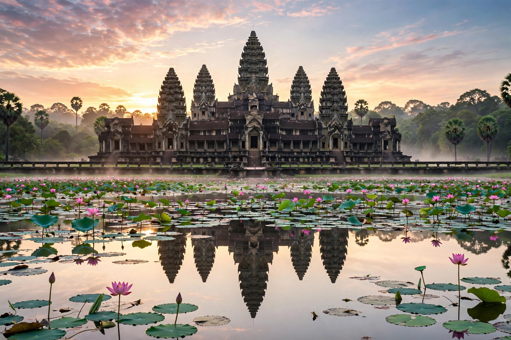

| Kingdom of Cambodia | |
|---|---|
 | |
| Capital | Phnom Penh |
| Official language | Khmer |
| Area | 181,035 km² |
| Population | ~17 million |
| Currency | Riel (KHR); US dollar widely used |
| Government | Unitary parliamentary constitutional monarchy (de facto dominant-party) |
| Independence | From France, 9 November 1953 |
Cambodia, officially the Kingdom of Cambodia, is a country in Mainland Southeast Asia, spanning an area of 181,035 square kilometres, bordered by Thailand to the northwest, Laos to the north, Vietnam to the east, and the Gulf of Thailand to the southwest. The capital and most populous city is Phnom Penh. The sovereign state has a population of about 17 million, most of whom practice Theravada Buddhism.
Cambodia's recorded history centers on the Khmer Empire (802–1431), whose capital region at Angkor built the vast temple complex of Angkor Wat, the world's largest religious monument. After centuries of decline under pressure from Siam and Vietnam, Cambodia became a French protectorate in 1863 and part of French Indochina. Independence was achieved in 1953 under King Norodom Sihanouk. The country was drawn into the Vietnam War; in 1975 the Khmer Rouge under Pol Pot seized power and, in the ensuing Cambodian genocide, killed an estimated 1.5–2 million people before Vietnam invaded in 1978. Following the 1991 Paris Peace Accords and a UN transitional administration, the monarchy was restored in 1993.
The low-lying central plain is dominated by the Mekong River and the Tonlé Sap, Southeast Asia's largest freshwater lake, whose flow reverses seasonally. Agriculture — especially rice — employs much of the workforce, alongside a large garment industry and growing tourism, concentrated on Angkor and the coast.
See also: Angkor Wat · Khmer Rouge · Phnom Penh